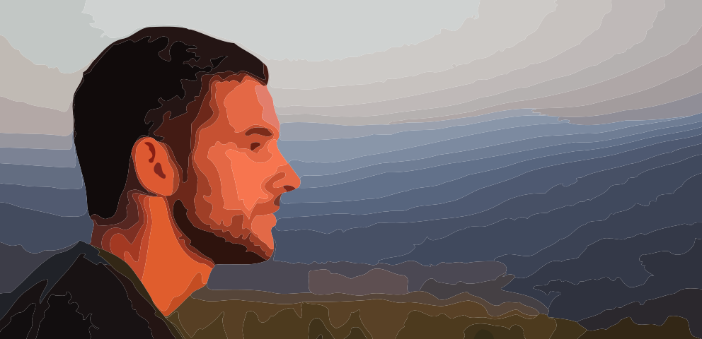

Web & GIS developer. Maps lover. In my freetime I love to learn new technologies and create WebApps proyects on my github account. I also like to do any boardsport every now and then.
Portfolio
{{app.resume}}
Professional experience
Skills
{{item.name}}
Education
Survey engineer
Universidad Politecnica de Madrid | 2014
Degree's Project (9/10)Utilización de recursos Open Data en procesos de documentación cartográfica de bajo coste sobre territorios no estructurados de interés arqueológico mediante imágenes Landsat 8: Área de Mleiha-Khor Fakkan (E.A.U). See article